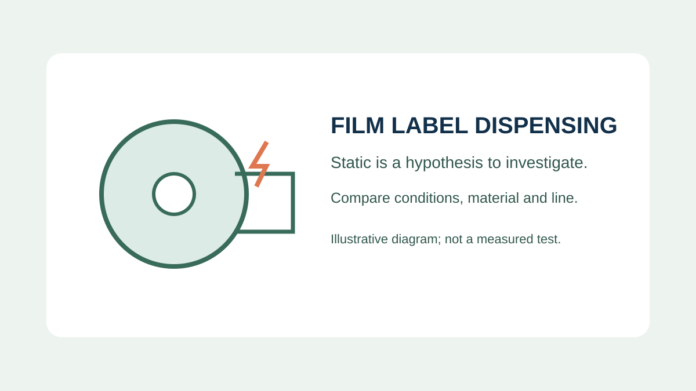
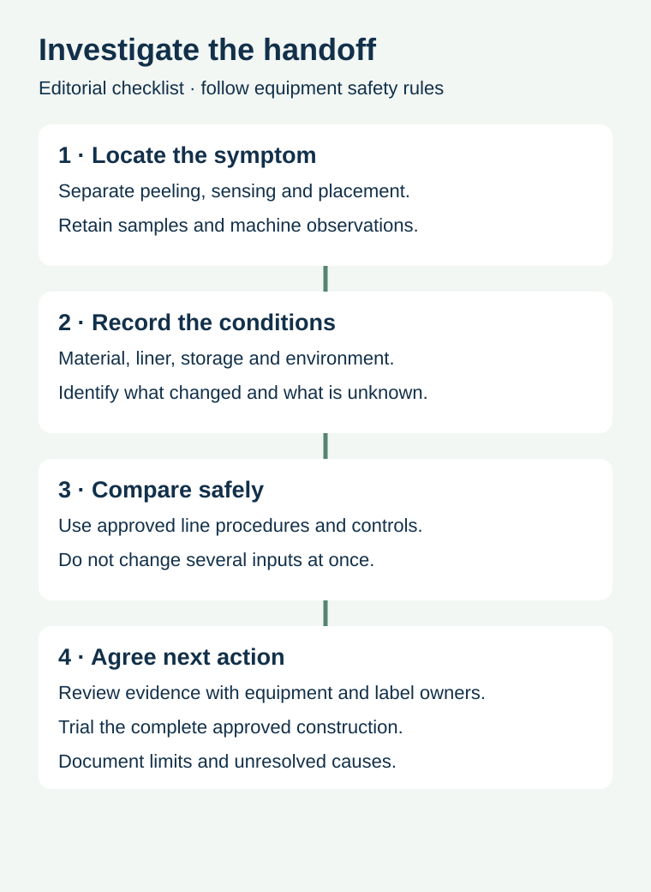

A film label does not leave its backing cleanly on a beverage line. The same artwork ran in an earlier trial, so purchasing is asked to replace the roll. Static is one possible contributor, but the same visible symptom can involve the release system, die cut, sensor or application setup. A useful investigation keeps those possibilities separate before changing the specification.
Identify exactly where the problem starts, preserve the roll and line conditions, and agree a controlled comparison with the equipment and label owners. Do not treat a crackle, a dry day or one good test as conclusive proof of the cause.

Separate the three handoffs
A label must be detected, release from its liner and reach the package in the intended position. A detection problem can look like a missing label. A label that remains partly on the liner asks a different question from one that releases and then folds or attaches to the wrong place. Record the first observable deviation and retain an example of the relevant roll section.
Avery Dennison's storage and dispensing bulletin identifies static as a possible contributor to film-label non-dispensing and describes other storage-related issues. Its discussion concerns its products and stated conditions; it does not diagnose your line or establish a universal humidity setting.
Build a record before adjusting the machine


| Record | Useful detail | What it does not prove |
|---|---|---|
| Symptom | First position where detection, release or placement changes | A cause from appearance alone |
| Construction | Face, adhesive, liner and roll/lot identification | That another construction behaves identically |
| Environment | Available temperature, humidity and storage history with time | That a single reading caused the event |
| Equipment | Station, sensor and operating setup recorded by the owner | That a setting is safe to change |
| Comparison | Actual runs, changed input and output observed | Production approval for every future condition |
If an observation is missing, write unknown rather than filling a gap from memory. Photograph the machine display or samples only where the site permits it. Keep raw labels, affected packaging and identification together so the converter and line team can examine the same material.
Compare possible causes without guessing
Static can be one hypothesis when a film label behaves differently after release, but it is not the only candidate. A release-force change, liner damage, label matrix left attached or sensor mismatch may need a different investigation. The release-force guide separates the label-to-liner interface from adhesion to the container; the sensor-planning guide covers the detection interface.
Consider a hypothetical co-packer that changes both liner type and applicator speed between two runs. The newer run has more placement issues. That comparison does not isolate liner, speed, storage or another condition. Plan a representative comparison with the equipment owner, keeping the other agreed inputs stable where practical. Record the actual change, sample identity and observed outcome; a preliminary trial narrows questions rather than proving a universal fix.
Make safety and product suitability explicit
Do not ask an operator to defeat guards, improvise grounding or apply a substance to the line. The equipment owner should assess any static-control equipment, cleaning or environmental adjustment against the manufacturer's instructions and the site's safety and food-production procedures. A material supplier can discuss the complete label construction and its storage conditions; the machine supplier can review the dispensing system. Neither should be assumed to own the other party's settings.
Changing a liner or facestock may alter roll build, sensing and dispensing as well as the downstream collection route. Validate the complete proposed construction and finished package against the actual application. A material that runs in a short trial has not automatically proven performance over the full intended operating range or shelf life.
Write a usable next-trial brief
- Identify the product, line, label SKU, construction and roll lot.
- Describe where the first deviation occurs and retain representative samples.
- Provide the conditions and storage history that were actually recorded.
- List the input to be changed and which relevant conditions will remain comparable.
- Agree observations, responsibilities and the limits of the trial before starting.
- Record the result and unresolved alternatives without converting correlation into a diagnosis.
For liner damage, see the separate die-cut and web-break investigation. For material storage history, use the label-roll storage guide. If the issue is package-side bubbles rather than release from the liner, the bottle-bubble guide follows a different handoff.
Send the line and material details together
Share the label size, face and liner where known, roll format, equipment type, sample identity, symptom location and recorded storage conditions. Prepare a label specification inquiry; the contact page opens an email draft and lists email or WhatsApp for attachments. Equipment servicing, test scope and actual supply capabilities need confirmation.